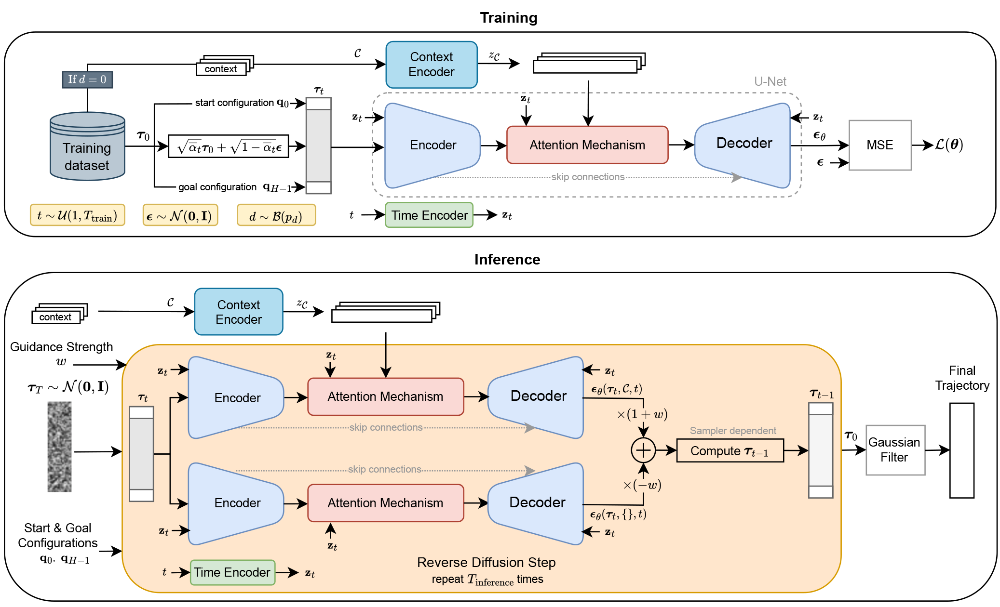
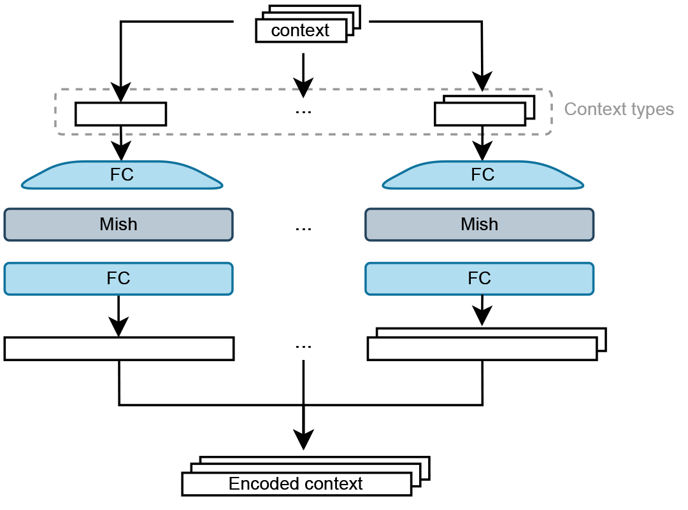
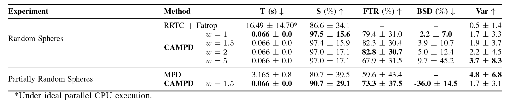
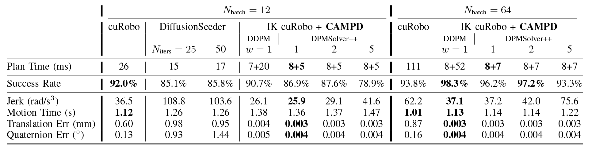

Abstract
Classical methods in robot motion planning, such as sampling-based and optimization-based methods, often struggle with scalability towards higher-dimensional state spaces and complex environments. Diffusion models, known for their capability to learn complex, high-dimensional and multi-modal data distributions, provide a promising alternative when applied to motion planning problems and have already shown interesting results. However, most of the current approaches train their model for a single environment, limiting their generalization to environments not seen during training. The techniques that do train a model for multiple environments rely on a specific camera to provide the model with the necessary environmental information and therefore always require that sensor. To effectively adapt to diverse scenarios without the need for retraining, this research proposes Context-Aware Motion Planning Diffusion (CAMPD). CAMPD leverages a classifier-free denoising probabilistic diffusion model, conditioned on sensor-agnostic contextual information. An attention mechanism, integrated in the well-known U-Net architecture, conditions the model on an arbitrary number of contextual parameters. CAMPD is evaluated on a 7-DoF robot manipulator and benchmarked against state-of-the-art approaches on real-world tasks, showing its ability to generalize to unseen environments and generate high-quality, multi-modal trajectories, at a fraction of the time required by existing methods.
Overview
Robot motion planning is the task of finding a smooth, collision-free trajectory that moves a robot from a start configuration to a goal configuration. While classical planning methods such as sampling-based and optimization-based planners can perform well, they often struggle in high-dimensional spaces and cluttered environments, especially when fast replanning is required.
We introduce Context-Aware Motion Planning Diffusion (CAMPD), a diffusion-based motion planner that generates high-quality, multi-modal robot trajectories while directly conditioning on structured environmental context. Instead of relying on a camera or depth sensor, CAMPD uses sensor-agnostic context, such as obstacle positions, sizes, and shapes, making it flexible and efficient across many environments.
CAMPD combines a U-Net diffusion architecture with an attention mechanism that allows the model to reason over an arbitrary number of contextual elements, such as varying numbers of obstacles. This enables strong generalization to previously unseen environments while maintaining very low inference time.
Key Contributions
- Context-aware diffusion planning: CAMPD directly integrates structured, sensor-agnostic context into a diffusion-based motion planner.
- Improved generalization: the model adapts well to unseen environments and varying obstacle configurations without retraining.
- Real-time, executable trajectories: CAMPD generates high-quality, dynamically feasible trajectories in real time, enabling rapid planning and replanning in dynamic settings.
Method
CAMPD formulates motion planning as a planning-as-inference problem using a denoising diffusion probabilistic model. During training, expert trajectories are gradually perturbed with Gaussian noise, while the model learns to reconstruct the noise conditioned on the start state, goal state, and contextual information about the environment.
The model contains three main components:
- A time encoder that embeds the diffusion step.
- A context encoder that maps structured environment information, such as obstacle parameters, into latent representations.
- A U-Net with attention that predicts the noise added to a trajectory and fuses the encoded context into the denoising process.
During inference, CAMPD starts from Gaussian noise and iteratively denoises it into a feasible robot trajectory. By using classifier-free guidance, the generated trajectories are steered more strongly toward solutions that satisfy the provided context. The start and goal states are fixed throughout denoising, and a lightweight Gaussian smoothing step is applied at the end to reduce jerk.

Overview of CAMPD.
Context Representation
A key feature of CAMPD is that it can be conditioned on a structured representation of the scene. Each obstacle or scene element is represented by a parameter vector, for example:
- Spheres: position and radius
- Cuboids: position, dimensions, and orientation
- Other object types: encoded through dedicated context-specific networks
Because the context is processed instance-by-instance and fused through attention, the method can naturally handle a variable number of obstacles at test time. This is important for real robotic environments, where the number and layout of objects can change from one task to the next.

Each contextual element is encoded separately before being fused into the diffusion model. Elements of the same context type are encoded using the same network.
Experiments & Results
Sphere-Based Environments
We first evaluate CAMPD on synthetic environments with a varying number of spherical obstacles. The model is trained on trajectories generated by a hybrid planner (RRT-Connect + optimization) and tested on unseen environments. The goal is to assess generalization, multi-modality, and computational efficiency.
CAMPD achieves higher success rates and faster planning times compared to classical and learning-based baselines, while generating diverse, multi-modal trajectories. Notably, it can outperform the planner used to generate its training data by sampling solutions from a broader distribution of feasible trajectories.
The tables below report quantitative results, while the videos illustrate the diversity and quality of generated trajectories in unseen environments.

Simulated Real-World Tasks
We further evaluate CAMPD on realistic manipulation tasks from the MπNet benchmark. These environments include complex scenes with cuboids and other objects, requiring accurate and collision-free motion planning.
CAMPD achieves competitive or superior success rates compared to strong baselines such as cuRobo and DiffusionSeeder, while maintaining significantly lower planning times. At larger batch sizes, its performance improves further by efficiently sampling multiple candidate trajectories and selecting feasible ones.
The quantitative results are shown in the tables below, and the videos demonstrate successful motion planning in challenging, previously unseen scenarios.

Conclusion
CAMPD is a fast and flexible diffusion-based motion planner that conditions directly on structured contextual information. By combining diffusion modeling, attention, and classifier-free guidance, it generates smooth and feasible trajectories while generalizing to environments not seen during training.
The results show that diffusion models are a promising foundation for real-time robot motion planning, especially when multiple candidate solutions and rapid replanning are needed.
BibTeX
@misc{sandra2026acceleratedmultimodalmotionplanning,
title={Accelerated Multi-Modal Motion Planning Using Context-Conditioned Diffusion Models},
author={Edward Sandra and Lander Vanroye and Dries Dirckx and Ruben Cartuyvels and Jan Swevers and Wilm Decré},
year={2026},
eprint={2510.14615},
archivePrefix={arXiv},
primaryClass={cs.RO},
url={https://arxiv.org/abs/2510.14615},
}